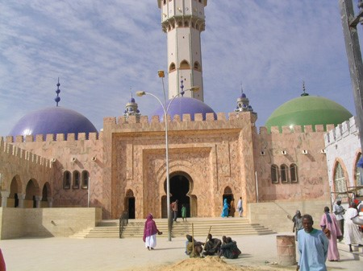
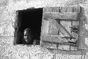
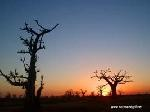

La mise en œuvre d’une école de permaculture dans une région Ivoirienne
La mise en œuvre d’une école de permaculture dans une région Ivoirienne
Créer de micro-projets agricoles :
L’agriculture locale étant une agriculture de subsistance, nous comptons mettre à la disposition des paysans, des tracteurs agricoles d’occasion, du matériel agricole, des semences, etc. afin que par regroupement de familles, ces agriculteurs en fassent bon usage dans l’optique d’améliorer leur production agricole Ainsi que des moulins pour alléger la souffrance des femmes et favoriser en générale l’épanouissement de la masse paysanne.
C’est le premier pas pour un développement communautaire autonome et responsable.
Créer des points d’eau
Nous comptons également Apporter une assistance technique et matérielle aux paysans dans le sens,
- de la culture des aliments de base (Riz, maïs, Manioc, Pomme de terre, Oignon, tomate etc.),
- De la transformation du beurre de karité, de l’arachide etc. en produits finis etc.
- De La fabrication de savon à partir des déchets des oléagineux,
- De la transformation de l’engrais naturel à partir des excréments bovins.
- De La conservation artisanale des excédents des produits maraîchers.
- Dans la fabrication de cuisinières solaires en collaboration avec des ONG d’ailleurs afin de lutter contre la déforestation.
- De la production de gaz de chauffe à partir des excréments bovins afin d’éviter l’utilisation de bois de chauffage, luttant ainsi contre la déforestation.
Faire du reboisement pour lutter contre la déforestation.
Créer des fermes d’élevage de bœufs (développer une entreprise de bétail laitier à moyen ou à long terme), de poulets, pisciculture et Apiculture.
Implanter à moyen ou à long terme une unité de transformation fruitière et laitière en collaboration avec les villages de la région.
Apporter un soutien humanitaire à la masse rurale à travers des dons de natures diverses.
Valoriser le patrimoine culturel

Exploiter le potentiel touristique en Côte d’Ivoire.


Par exemple, les ivoiriens gagneraient à mettre en valeur les potentialités dont regorge la région de Touba en Côte d’Ivoire. Mosquées historiques, cascades de Zaala, masque échassier de Gbelo, grottes de Toutche.»
Cela exige une véritable infrastructure en matière d’adduction d’eau, de centre de santé, de système de communication (téléphone)
Valoriser la Médecine Traditionnelle ainsi que les plantes médicinales.
Instituer des cours d’alphabétisation à l’intention des paysans, notamment pendant les saisons creuses (saisons sèches, jours de repos) et une scolarisation avec un équipement adéquat à leurs enfants.
Créer à terme une banque villageoise financée principalement par les paysans eux-mêmes. Cela se passera par l’incitation à l’épargne et ce, juste après la vente annuelle des produits agricoles. L’argent récolté sera disponible aux épargnants à leur demande. Les fonds de caisse seront disponibles à l’emprunt afin de développer le commerce informel des paysans.
Promouvoir les échanges commerciaux entre l’Europe et la Côte d’Ivoire.
Toutes ces actions seront réalisées dans un esprit de durabilité.
Si vous êtes Intéressé A vous joindre à notre mouvement ou à y apporter votre soutien, contacter nous :
Avenue Reine Elisabeth 35/042 Liège 4020 Belgique
Email : agrivie.asbl@live.be
Compte Triodos Bank : BE18 5230 8146 9365
CODE BIC: TRIOBEBB
TEL (Belgique): 0032 465 538 212
TEL (Côte d’Ivoire) : 00225 07 79 478 621